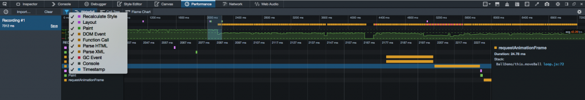
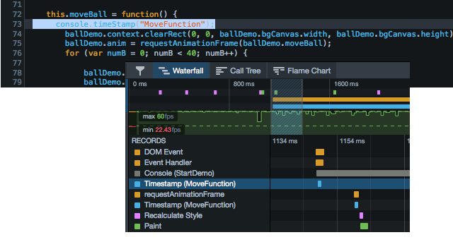
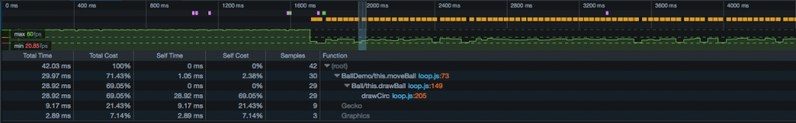
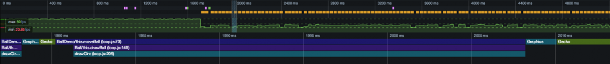
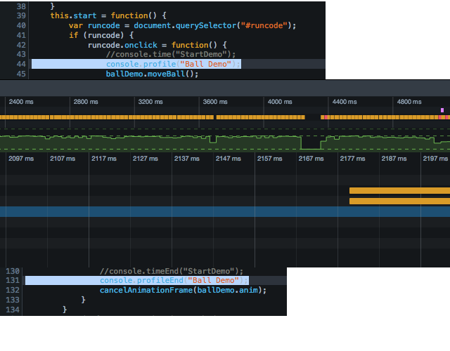
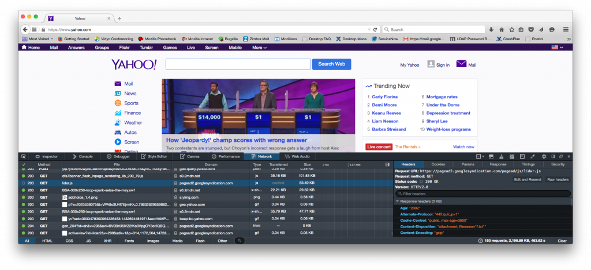
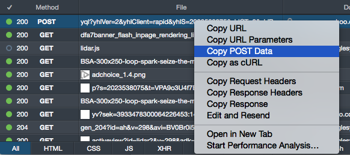
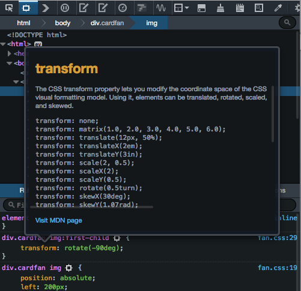
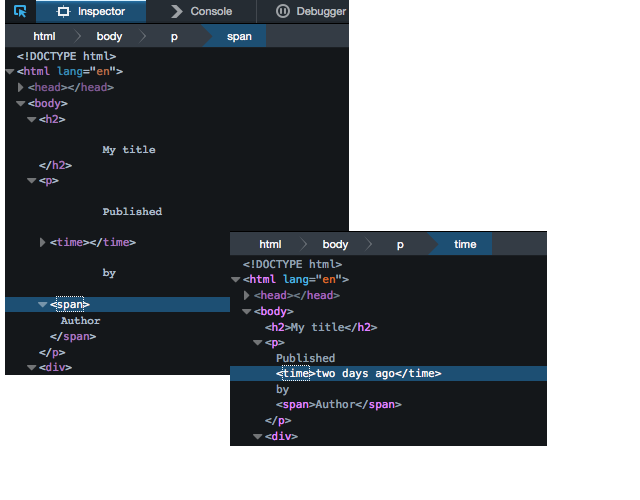

很高興 Firefox 開發者版本 (Developer Edition) 現已具備全新效能工具。目前的 Firefox 開發者版本也就是將來的 Firefox 40 (這裡簡稱 DE 40 )。本文將討論數項 DE 40 的新開發工具，以及對現有工具的修正與改善之處。此外還有精采影片為大家呈現其中幾項功能。
附註：在稍早的五月份《淺談 Firefox 40 開發者工具》一文中，已經介紹了多項新功能。
介紹新的效能工具
Firefox 開發者版本具備新的效能工具，讓開發者站在 App 的效能觀點，來進一步了解實際發生的事情。Web 開發者也能透過這些工具而分析任何 App、網站，甚或遊戲的效能。以趣味的角度看看這些工具是如何最佳化 HTML5 遊戲。可參閱另篇《Power Surge ─ 用 Firefox 開發者版本最佳化此 HTML5 遊戲中的 JavaScript》一文。
現在所有效能工具均已納入「效能 (Performance)」分頁之下以方便使用。效能與時間密切相關，所以你現在能以時間軸的方式檢視瀏覽器事件。根據你所想監看的時間尺度，呈現更多細節。
Dan Callahan 將透過下方影片展示效能工具的使用方式。
「效能 (Performance)」分頁具備新的時間軸，包含「Waterfall」、「Call Tree」、「Flame Chart」等檢視模式。
這些檢視模式都能透過時間軸而呈現 App 整體效能的細節。時間軸將顯示壓縮的 Waterfall、最低＼最高＼平均幀率 (Frame rates)，並以圖形化的方式呈現幀率。直接點擊檢視畫面並拖曳到想看的範圍，就能放大該段時間軸細看。此時也會同步更新全部三種檢視模式，顯示你所選擇的特定範圍。
記錄檢視模式，能讓開發者迅速放大觀看幀率問題發生的範圍。

「Waterfall」檢視模式，是以圖形化的時間軸呈現 App 中發生的事件。這些事件包含發生時間的標記，如「reflows」、「restyles」、「garbage collection」、「paint operations」、JavaScript 呼叫函式。透過簡單的篩選按鈕，即可選擇你想在 Waterfall 中顯示的事件。

在特定事件發生時，另可透過如 console.timeStamp() 的主控台指令，搭配 Waterfall 上的標記來指定該事件。同樣另可使用 console.time() 與 console.timeEnd() 函式，以圖形化的方式呈現特定時段。

「Call Tree」檢視模式可讓 JavaScript 效能分析器 (Profiler) 呈現特定範圍的結果，看出函式中所耗用的大概時間。此表格另可顯示某一函式呼叫的總耗時，或是特定函式呼叫本身所耗用的時間。這裡的總時間包含了函式內所耗用的全部時間，包含巢狀函式呼叫所耗用的時間。本身耗用的時間就是「特定函式的耗時減去巢狀呼叫函式的耗時」。如果想要找出佔去大部分處理時間的函式，此檢視模式就特別有用。且 Firefox 早已支援此模式，所以對使用過的開發者應該不算陌生。

「Flame Chart」檢視模式是以圖形化的方式呈現選定範圍之內的呼叫堆疊 (這部份類似 Call Tree)。以下圖為例，drawCirc() 函式共超過 25 微秒 (millisecond，ms) 才完成，這段時間就大於 60 fps 幀像產生的「期限」。

我們可建立、儲存、匯入、篩除效能分析檔案。此外也能一次開啟多個分析檔案，以利比對各次執行之間的效能統計數據。你可透過主控台或程式設計的方式建立分析檔案。只要輸入 console.profile("NameOfProfile") 與 console.profileEnd("NameOfProfile")，即可分別開啟＼停止分析檔案。當要在自己的程式碼中開始＼停止效能分析時，就有利於開發者進行微調。

你可到 MDN 上參閱效能工具的完整說明文章，其中包含使用者介面 (UI) 導覽、各主要工具參考頁面，以及透過工具診斷 CSS animations 與高度依賴 JavaScript 頁面效能問題的範例。
更多功能與改善之處
除了新效能工具的多項方便功能 (大多數都是透過 UserVoice 管道直接獲得開發者的反饋意見) 之外，還修正了超過 90 個臭蟲。感謝 Firefox 開發者工具團隊與多位貢獻者過去 8 個星期來的努力。歡迎大家繼續提供任何問題與意見。
此由 Matthew “Potch” Claypotch 所拍攝的影片，即為大家呈現 DE 40 中多項反應頻率最高的功能。
「網路監測器 (Network Monitor)」改善之處
如上面影片，「網路監測器」也提升了多項功能。即使尚未啟動「網路 (Network)」分頁，也同樣能進行資料蒐集。且在載入快取 (而非網路) 的整體資料 (Asset) 時，亦可迅速一瞥這些東西。

現在只要選定某列輸入項，即可透過滑鼠右鍵選單來複製 POST 資料、URL 參數、請求 (Request)＼回應 (Response) 標頭。

整合 CSS 說明文件
Firefox 開發者工具現已整合 CSS 屬性的 MDN 說明文件，讓開發者在進行 Web app 樣式與配置的除錯時，能取得更多資訊。你可對「檢測器 (Inspector)」分頁中的 CSS 屬性按下滑鼠右鍵 (Mac 則是按下 Ctrl + click)，再點選右鍵選單的「顯示 MDN 文件 (Show MDN Docs)」即可。

改善檢測器的配置
在檢測器分頁中，現已清除文字節點配置中的空白字元，讓你的網頁原始碼看來更清楚。

更多修正之處
另外還有許多修正的地方，像是「動畫檢測器 (Animation Inspector)」的改善、捲動即可檢視右鍵選單，以及提升了檢測器的搜尋功能。你可參閱 Bugzilla 中的清單已了解此版本所解決的所有問題。
我們同樣要特別感謝所有回報問題、測試修正檔，還有花上許多時間讓 Firefox 開發者工具更好的諸多貢獻者。